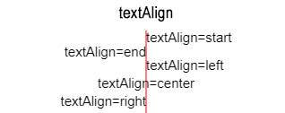
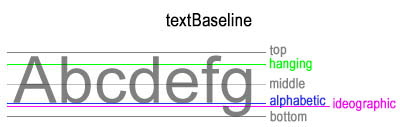
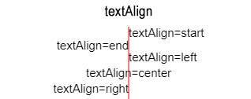
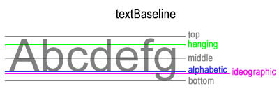

Updated ( 2018-11-05 / 2018-11-29 )
| Method / Property | Description |
|---|---|
| canvasCtx2D.fillText("text", x, y, max_width(nr)) | draws a filled text on the canvas |
| canvasCtx2D.font = "CSSFont shorthand(font-style | font-variant | font-weight | font-size | line-height | font-family)" | gets or sets the font style of the canvas context (font-size and font-family minimum required!) |
| canvasCtx2D.measureText("text") | returns the TextMetrics object which has the width property containing the given text length (in pixels) |
| canvasCtx2D.strokeText("text", x, y, max_width(nr)) | draws a stroke (not filled) text on the canvas |
| canvasCtx2D.textAlign = "start(default)/end/left/right/center" | gets or sets the horizontal position to the text compared to the set text coordinates of the canvas context |
| canvasCtx2D.textBaseline = "alphabetic(default)/top/bottom/middle/ideographic/hanging" | gets or sets the vertical (baseline) position of the text of the canvas context |
-
-
SYNTAX : canvasCtx2D.strokeText("text", x, y, max_width(nr)) // draws a stroke (not filled) text on the canvas
canvasCtx2D.fillText("text", x, y, max_width(nr)) // draws a filled text on the canvas
- max_width(nr) : scales down (compresses) the text to fit in the specified width (does not cut letters of!)
canvasCtx2D.measureText("text") // returns the TextMetrics object which has the width property containing the given text length (in pixels)
canvasCtx2D.font = "CSSFont shorthand(font-style | font-variant | font-weight | font-size | line-height | font-family)" // gets or sets the font style of the canvas context (font-size and font-family minimum required!)
- "CSSFont" : CSS "font" shorthand porperty (default "10px sans-serif")
canvasCtx2D.textAlign = "start(default)/end/left/right/center" // gets or sets the horizontal position to the text compared to the set text coordinates of the canvas context
canvasCtx2D.textBaseline = "alphabetic(default)/top/bottom/middle/ideographic/hanging" // gets or sets the vertical (baseline) position of the text of the canvas context
 



<canvas id ="demo" style="border:solid 1px black"></canvas>
<script>
var ctx = document.getElementById("demo").getContext("2d");
ctx.font = "bold italic 18px Arial"; // font style declared to the context (same values are used as in CSS "font" shorthand property) // -! size and font-family minimum MUST be specified!
ctx.textAlign = "center"; // text centered around its coordinates
ctx.textBaseline = "middle"; // baseline (vectical coordinates) set to the middle of the text
ctx.strokeText("myText", 150, 75); // draws a stroke (not filled) text (centered perfectly because of the "textAlign" and "textBaseline" settings)
ctx.textAlign = "right";
ctx.textBaseline = "bottom";
var canvasText = "myText 2"
ctx.fillText(canvasText, 300, 150, 70); // text placed on the right-bottom corner ("textAlign" and "textBaseline" settings makes this easy)
// max-width set to 70px (text is compressed to fit in 70px width)
ctx.measureText(canvasText); // -> {width:77.3701171875} // object holds the textWidth information in pixels
</script>
<canvas id="textTest" style="border:solid 1px black"></canvas>
<script>
var textCanvas = function() {
var ctx = document.getElementById("textTest").getContext("2d");
ctx.strokeText("Hello Word", 20, 20); // stoke text looks thicker because the letters are small and the stroke around it makes it thicker
ctx.fillText("Hello Word", 20, 35);
ctx.beginPath();
ctx.moveTo(20, 45.5);
ctx.lineTo(280, 45.5);
ctx.stroke();
var myText = "My Custom text";
ctx.fillText(myText, 20, 65); // string drawn
ctx.fillText(`text length = ${ctx.measureText(myText).width}`, 20, 80); // measure the text length
ctx.beginPath();
ctx.moveTo(20, 90.5);
ctx.lineTo(280, 90.5);
ctx.strokeText(myText, 20, 105, 100); // no text compression, text-max with limited to 100px
ctx.fillText(myText, 20, 120, 50); // text max-width limited to 40px
ctx.strokeText(myText, 20, 135, 35); // text max-width limited to 35px
ctx.stroke();
}
textCanvas();
</script>
- TEST[2018-11-15], using external fonts set by @font-face roule CSS = EDGE supports it / Chrome and Opera No support / Mozilla does not even display the text (no fallback)
<canvas id="fontTest" style="border:solid 1px black"></canvas>
<script>
var fontTest = function() {
var ctx = document.getElementById("fontTest").getContext("2d");
ctx.strokeText("Hello Word", 20, 20);
ctx.font = "italic 18px serif"; // font style set
ctx.strokeText("Hello Word", 20, 40);
ctx.font = "bold small-caps 16px Candra"; // font style set
ctx.fillText("Hellow Word", 20, 60);
ctx.font = "16px myFont"; // @font-face set in CSS (very poor browser support [2018-11-15])
ctx.fillText("CSS External Font", 20, 80);
}
fontTest();
</script>
-- CODE (CSS) --
@font-face {
font-family: myFont;
src: url(Font-Families/CoveredByYourGrace.ttf);
}
<canvas id="textAlignTEST" style="border:solid 1px black;"></canvas>
<script>
var textAlignT = function() {
var ctx = document.getElementById("textAlignTEST").getContext("2d");
ctx.strokeStyle = "red";
ctx.font = "14px sans-serif";
ctx.moveTo(150, 0);
ctx.lineTo(150, 150);
ctx.stroke();
ctx.fillText("Text Align DEFAULT (start)", 150, 20); // textAlign = "start" (beginning of the text)
ctx.textAlign = "left"; // left of the text
ctx.fillText("Text Align LEFT", 150, 50);
ctx.textAlign = "end"; // end of the text
ctx.fillText("Text Align END", 150, 80);
ctx.textAlign = "right";
ctx.fillText("Text Align RIGHT", 150, 110); // right of the text
ctx.textAlign = "center"; // text centered at the specified coordonates
ctx.fillText("Text Align CENTER", 150, 140);
}
textAlignT();
</script>
<canvas id="baselineAlignTEST" style="border:solid 1px black;" width="600"></canvas>
<script>
var baselineTest = function() {
var ctx = document.getElementById("baselineAlignTEST").getContext("2d");
ctx.font = "30px Arial";
ctx.strokeStyle = "red";
ctx.beginPath(); // draw first guide line
ctx.moveTo(0, 40.5);
ctx.lineTo(600, 40.5);
ctx.stroke();
ctx.fillText("alphabetic", 2, 40.5); // default textBaseline value is "alphabetic"
ctx.textBaseline = "ideographic";
ctx.fillText("ideographic", 200, 40.5);
ctx.textBaseline = "hanging";
ctx.fillText("hanging", 400, 40.5);
ctx.beginPath(); // draw second guide line
ctx.moveTo(0, 110.5);
ctx.lineTo(600, 110.5);
ctx.stroke();
ctx.textBaseline = "bottom";
ctx.fillText("bottom", 2, 110.5);
ctx.textBaseline = "middle";
ctx.fillText("middle", 200, 110.5);
ctx.textBaseline = "top";
ctx.fillText("top", 400, 110.5);
}
baselineTest();
</script>